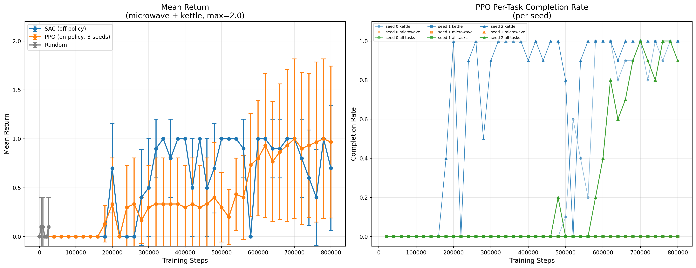

Left: Mean return (±1 std) over 800k training steps. SAC (1 seed) vs PPO (3 seeds) vs Random. Right: PPO per-task completion rate per seed. Seed 2 learns both microwave and kettle; seeds 0 and 1 learn only kettle or nothing.
We address sparse-reward, long-horizon manipulation in the 9-DoF Franka Kitchen environment. Standard online RL struggles because meaningful reward signals are extremely rare under random exploration. We compare an on-policy baseline (PPO) against an off-policy baseline (SAC) and a random agent, then propose an offline-to-online approach that warm-starts the policy from an expert dataset combined with a hierarchical goal-conditioning strategy to sequence sub-tasks.
3-episode rollouts from each method on microwave + kettle tasks.
Erratic motion. Mean return ≈ 0.05.
Learns kettle reliably. Mean return ≈ 1.0.
Seed 2: solves both tasks. Mean return ≈ 1.9.

Left: Mean return (±1 std) over 800k training steps. SAC (1 seed) vs PPO (3 seeds) vs Random. Right: PPO per-task completion rate per seed. Seed 2 learns both microwave and kettle; seeds 0 and 1 learn only kettle or nothing.
Environment. FrankaKitchen-v1 features a 9-DoF Franka Panda arm in a kitchen with interactive objects. The observation is a 59-dim vector (joint positions/velocities + object states). The reward is sparse: +1 per task completed in a step. Episodes run for 280 steps and terminate early only if all tasks are solved.
On-policy baseline (PPO). We use PPO with ReLU 2×256 actor/value networks, rollout buffer of 2048 steps, and 10 optimization epochs per rollout. Three seeds are run; results show high variance—one seed solves both tasks, another learns nothing.
Off-policy baseline (SAC). SAC with 2×256 networks, 1M replay buffer, and automatic entropy tuning. Reaches mean return ≈1.0 (one task) after ~300k steps, but rarely solves both tasks.
Proposed: Offline-to-Online RL. We warm-start the policy on an expert dataset using conservative Q-learning (CQL), then fine-tune online. Combined with a learned high-level goal classifier that sequences sub-tasks, this approach aims to achieve return > 1.5 consistently (both tasks completed).